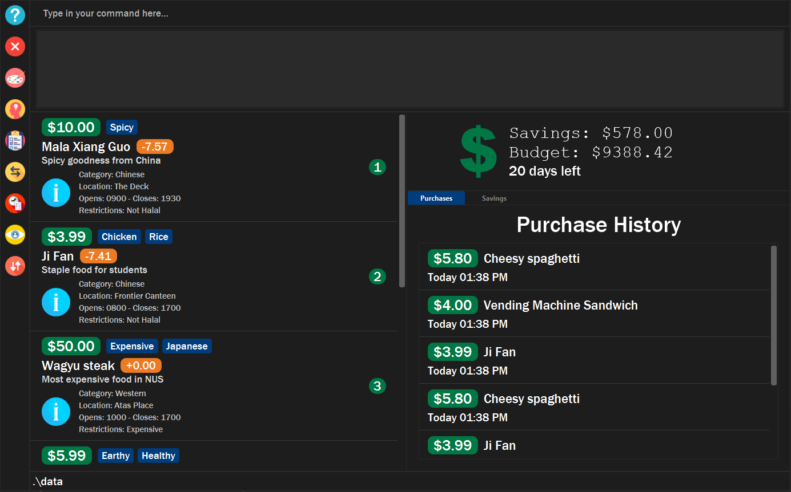

By: Team-F13-2 Since: Sep 2019 Licence: MIT
1. Introduction
-
$aveNUS is a desktop financial planning app that allows NUS students to plan their meals according to the amount of budget they set aside per meal in NUS. With $aveNUS, you can more effectively manage your expenses, save your favourite meal options within NUS, edit meal options, and even receive recommendations for meals that suit your budget.
-
More importantly, $aveNUS is optimized for those who prefer to work on a Command Line Interface (CLI) while still having the benefits of a Graphical User Interface (GUI).
-
Interested in our app? Section 2, “Quick Start” to get started. Enjoy!
2. Quick Start
Welcome to $aveNUS! If you are just starting out, this quick start will help you get $aveNUS up and running on your computer. It will equip you with the basics you need to know to utilise $aveNUS optimally.
2.1. Using the User Guide
code |
Command that can be typed into the command box |
|---|---|
|
Success execution of command |
|
Tips that might be useful |
|
Additional information that is good to know |
|
Important pointers to take note |
2.2. Pre-Requisites
-
Ensure you have Java 11 or above installed in your Computer.
You can download Java 11 from here. -
Copy the file to the folder you want to use as the home folder for $aveNUS.
-
Double-click the file to start the app. The GUI should appear in a few seconds.
 -
Type the command in the command box and press Enter to execute it.
e.g. typinghelpand pressing Enter will open the help window. -
Some example commands you can try:
-
First, add a food item into the menu by typing **
add n/Halal chicken rice p/3.00 d/chicken and rice c/Malayand click Enter -
You should see that a food item panel appear on the right of the window as shown below in Figure 1.2:
-
-
Now, try typing
delete 1and then click Enter. Now the card labelled "1. Halal chicken rice" should disappear. -
Type
exitand click Enter and the desktop application should close. -
If everything above executes as stated, you can use $aveNUS to plan your expenditure in NUS now!
2.3. Navigating $aveNUS
-
TODO insert when we complete the user interface.
2.4. Using Commands
You can use the commands described in Section 3, “Features” by typing them into the command box and then hitting Enter.
You have to provide additional parameters for some commands, and the format of each command is provided in the command descriptions.
-
Refer to Section 3, “Features” for details of each command.
3. Features
3.1. General Commands
3.1.1. Alias
Adds a custom ALIAS to a COMMAND. All future occurrences of that alias
will be executing that COMMAND.
Format: alias ALIAS_COMMAND
Example: alias roby exit
3.1.2. Help
Display the help screen that contains helpful information on how to use the application.
Format: help
3.1.3. History
Display within the grey box right below the command line box, a list of commands that were recently typed in order of which was most recent.
Format: history or h
3.1.4. Info
Displays the information of the command specified.
Format: info COMMAND
Example: info edit
3.1.5. Collapse
Makes the Food Card more or less compact, depending on the user’s preference.
Format collapse
Example: collapse
3.1.6. Undo
Undoes a command a specific number of TIMES. Note: TIMES must be a positive integer.
Format: undo TIMES
Example: undo 1
3.1.7. Redo
Redoes a command a specific number of TIMES. TIMES must be a positive integer.
Format: redo TIMES
Example: redo 1
3.2. Food Items
3.2.1. Add
Adds a food item to the food list. Note: Price must be in integer or double value with at most 2 decimal places. Note: Opening Hours must be in HHMM format. Note: NAME, PRICE and CATEGORY are mandatory fields.
Format: add n/NAME d/DESCRIPTION p/PRICE c/CATEGORY l/LOCATION o/OPENING HOURS r/RESTRICTIONS
Example: add n/Chicken Rice d/Rice with Chicken p/2.50 c/Chinese l/NUS o/0800 2000 r/NIL
3.2.3. Edit
Edits a food item at a INDEX based on a specific FIELD or fields. INDEX must be a positive integer. At least one FIELD must be given.
Format: edit INDEX n/NAME d/DESCRIPTION …
Example: edit 2 n/Fried Rice
3.2.4. Find
Finds a food items based on a specific FIELD or fields. At least one FIELD must be given.
Format: find n/NAME d/DESCRIPTION …
Example: find n/Chicken d/Rice
3.2.5. Filter
Filters the food items based on the criteria specified. Note: You can need to
have at least one of a FIELD, QUANTIFIER and VALUE.
Format: filter FIELD QUANTIFIER VALUE
Example: filter PRICE LESS_THAN 4.00 CATEGORY EQUALS_TO Halal
3.2.6. Delete
Deletes a food items based on the given INDEX. INDEX must be a positive integer.
Format: delete INDEX
Example: delete 2
3.2.8. Sort
Sorts all the food items by one specific FIELD. The fields are as followed: NAME, DESCRIPTION, PRICE, CATEGORY, LOCATION, OPENING_HOURS, RESTRICTIONS.
Format: sort FIELD
Example: sort OPENING_HOURS
3.3. Budgeting
3.3.1. Budget
Allows the user to set a budget AMOUNT for food expenses for a certain number of DAYS. DAYS must be a positive integer. AMOUNT must be a positive integer or double with 2 decimal places.
Format: budget AMOUNT DAYS
Example: budget 100.00 10
3.3.2. Buy
Allows users to log a food expense into the application.
Format: buy FOOD_INDEX
Example: buy 1
3.3.3. Save
Allows users to log an amount of money to save in his savings account from user’s wallet.
| Make sure you have money in your wallet before you save! You cannot save money without having money in your wallet. |
|
You will see a success message and the amount of money you have saved in your savings account. |
| If you click the "Savings" tab on the right panel, you will be able to view your savings history. Also the amount saved is deducted from your wallet. |
3.3.4. Withdraw
Allows users to log an amount of money to withdraw from his savings account into his wallet.
| You must have money in your savings account before you can withdraw from it. |
|
You will see a success message and the amount of money you have withdrew from your savings account. |
| If you click the "Savings" tab on the right panel, you will be able to view your savings history. Also the amount withdrawn is added into your wallet. |
3.4. Recommendations
3.4.1. Recommend
Allow users to get a recommendation from the application, based on the current budget as well as the available food items entries. This also takes into account the user’s likes and dislikes (see below).
To clear the recommendations, use the list or add commands.
|
|
The list of recommendations will be shown. |
3.4.2. Adding Likes and Dislikes
Users can specify their liked and disliked categories, tags and/or locations. The recommendation system (as mentioned above) will then be able to generate more accurate recommendations with your preferences.
| Users can provide multiple categories, tags and/or locations with each command. To list the user’s likes and dislikes, use the command without providing any arguments. |
| You cannot add what you have already liked into your current dislikes, and vice versa. The user’s likes and dislikes will be also saved into the hard disk for their convenience. |
To list likes/dislikes:
|
The list of liked or disliked categories, tags and locations will be shown. |
To add likes:
|
You will see a success message and your liked categories, tags and locations would be added. |
To add dislikes:
|
You will see a success message and your disliked categories, tags and locations would be added. |
3.4.3. Removing Likes and Dislikes
Users are able to remove their previously added likes and dislikes (if they exist) from the system.
| Users can provide multiple categories, tags and/or locations with each command. |
| To remove all likes or dislikes, use the command without providing any arguments. Only use this command if you are sure that you want to clear your likes and dislikes! |
To remove likes:
|
You will see a success message and your liked categories, tags and locations would be removed. |
To remove dislikes:
|
You will see a success message and your disliked categories, tags and locations would be removed. |
To remove all likes:
|
You will see a success message and your liked categories, tags and locations would be cleared. |
To remove all dislikes:
|
You will see a success message and your disliked categories, tags and locations would be cleared. |
4. Frequently Asked Questions
-
Will the available food items only be localized around a certain location? What if I am staying in a remote area will I still be able to use this app?
As a user, you are able to add your own restaurants and food items into the app, hence allowing you to add restaurants in a remote location.
-
Am I able to share my expenses with other people?
Yes, you are able to obtain a complete list of your expenses as a text file for sharing.
-
Do I need to install anything to use the app?
You need to ensure that you have Java SE Development Kit version 11 or later to run the app.
-
Am I able to reset the app and remove all of my data?
Yes you can do this by using the “clear” command.
-
Does this app support another language?
Unfortunately you are unable to change the app’s language
5. Command Summary
Command |
Description |
Add food item. |
|
Budget Section 3.3.1, “Budget” |
Allows the user to set a budget amount for food expenses for a certain number of days. |
Allows users the log a food expense into the application. |
|
Clear Section 3.2.7, “Clear” |
Clears all food item |
Collapse Section 3.1.5, “Collapse” |
Makes the Food Card more or less compact, depending on the user’s preference. |
Delete Section 3.2.6, “Delete” |
Deletes a food items based on the given index. |
Specifies the user’s disliked categories, tags and locations |
|
Edits a food item at a index based on a specific field or fields. |
|
Exits the app. |
|
Filter Section 3.2.5, “Filter” |
Filters the food items based on the criteria specified. |
Finds food items based on specified fields. |
|
Display possible uses of the application. |
|
History Section 3.1.3, “History” |
Displays the list of commands that has been typed by the user. |
Displays the information of the command specified. |
|
Specifies the user’s liked categories, tags and locations |
|
List all saved food items |
|
Recommend Section 3.4.1, “Recommend” |
Recommend a food item, based on the user’s budget. |
Like [Likes and Dislikes] |
Likes categories, tags and locations |
Dislike [Likes and Dislikes] |
Dislikes categories, tags and locations |
Redo a command a specified number of times. |
|
Removedislike Section 3.4.3, “Removing Likes and Dislikes” |
Remove dislikes from the user’s specified dislikes or clears the dislikes list |
Removelike Section 3.4.3, “Removing Likes and Dislikes” |
Remove likes from the user’s specified likes or clears the likes list |
Sort all the food items by a specified field. |
|
Saves a specified amount of money from the user’s wallet into his savings account. |
|
Tutorial Section 3.1.9, “Tutorial” |
Give users a brief guide on how to use the application. |